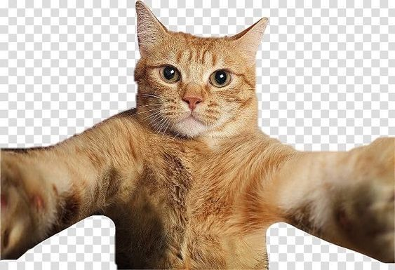

¿Qué son los gatos?
Los gatos son animales domésticos muy populares en todo el mundo. Son conocidos por su independencia, agilidad y carácter curioso.
Características de los gatos
- Son ágiles y rápidos
- Tienen excelente visión nocturna
- Son animales limpios
- Pueden ser cariñosos y juguetones

¿Por qué son buenas mascotas?
Los gatos requieren menos espacio a diferencia de otros animales, se adaptan facilmente y ayudan a reducir el estrés.